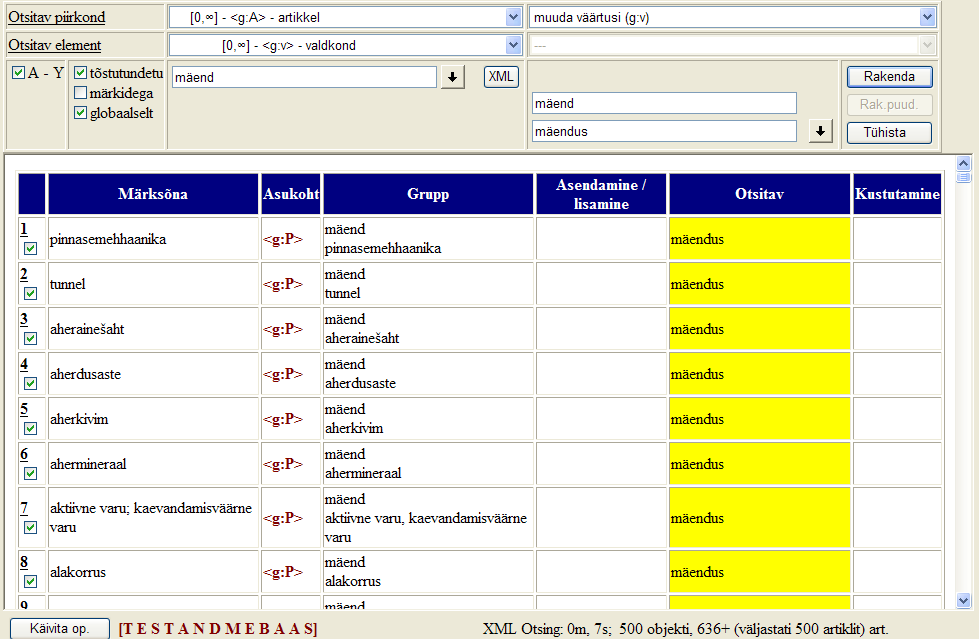

Hulgiparandused
Sõnastikutöös tekib olukordi, kui on vaja teha ühesugune parandus paljudes artiklites korraga, viia sõnastik vastavusse skeemimuutusega, kustutada mingi tunnuse järgi leitavad artiklid vms. Vältimaks ajakulu ja vigu, mis ükshaaval parandamise käigus paratamatult tekib, on EELexil selliste operatsioonide tarbeks võimas tööriist Hulgiparandused.
Hulgiparandusi saab teha elemendi, tema väärtuse või atribuudi, elementide grupi või artikli kallal. Hulgi saab
- parandada või kustutada elemendi väärtust;
- asendada, lisada või kustutada elementi valitud piirkonnas (grupis, ülemelemendis);
- asendada/lisada või kustutada atribuuti;
- muuta gruppe;
- kustutada artikleid.
NB! Korra tehtud hulgiparandust lihtsa võttega tühistada ei saa! Keerulised võtted on olemas, vt Hulgiparanduse tühistamine allpool.
Tööde järjekord hulgi parandades
- Veendu, et plaanitavad parandused on kooskõlas sõnastiku skeemiga. Vajaduse korral muuda enne skeemi.
- Tee hulgiparandused.
- Valideeri parandatud köide (köited) (vt Sõnastiku valideerimine).
Hulgiparanduste aken
Ava Hulgiparandused Sõnastiku tööriistade nupu alt. Ilmuvas aknas on kolm piirkonda:
- Otsinguala ülal vasakul - otsinguparameetrite abil leitakse artikli osad (grupid), milles parandusi tegema hakatakse.
- Operatsioonide ala ülal paremal - siin vali tehtava paranduse laad ja määra vanad ja/või uued väärtused;
- Otsingutulemuste tabel all keskel - siin on näha, millised artikli osad otsinguparameetrite järgi sõnastikust leiti. Tabelis lahtritele klikkides saab näha otsitava elemendi ümbrust XML kujul. Lahtritele klõpsates saab ka artikkelhaaval muutusi teha - mõnikord osutub just see kõige mugavamaks viisiks (mugavam ka kui Toimetamisalal parandamine). Esimeses veerus saab linnukest maha võttes ära märkida need artiklid, millele hulgiparandust rakendada tarvis ei ole.
Igal akna elemendil hiirega veidi aega viibides ilmub lühike abiinfo.

Muudetavate kirjete ja piirkonna määramine
Alusta tööd sellest, et määra ära, millises artikli piirkonnas (artikli osas) ja millises elemendis sa tahad parandust teha. Selleks vali
Otsitav piirkond, s.o piirkond, milles asub element, mida muuta on vaja, ja
Otsitav element, s.o element, mille abil määratled muutmisele minevad artikli osad.
Tekstilahtrisse saad kirjutada
elemendi väärtuse (sisu), kasutada saab metamärke (nt tärn * tähistamaks suvalist arvu suvalisi sümboleid).
Kui otsitaval elemendil on
atribuute, siis ilmub veel valikmenüü nende valimiseks ning väike tekstilahter väärtuse sisestamiseks.
Kui otsitav element on
loend (tüüp), siis ilmub otsiakna taha allapoole suunatud noolega nupp, mille abil saab loendist väärtuse valida (ja vältida kirjavigu).
Otsingut saab vaikimisi pandud linnukest maha võttes muuta
tõstutundlikuks.
Kui on linnuke
globaalselt, siis otsitakse kogu artikli ulatuses, vastasel juhul vaid otsitavas piirkonnas.
Linnuke
A-Z jt võimaldavad määrata sõnastiku köited, millest otsitakse.
Vajutus nupule
XML kuvab kirjeldusele vastavad elemendid.
Linnuke
märkidega - kui väljas, siis ignoreerib otsitavas tekstis märke, mis selle sõnastiku tähestikku ei kuulu (nt liitsõnapiiri tähistavat sümbolit).
Paranduse määramine ja käivitamine
Operatsioonide ala esimese valiku abil saad valida parandust (operatsiooni), mida otsinguparameetritega määratud piirkonnas rakendada soovid. Selle all on valik, mille abil vali element, mida muuta soovid. Kui sel elemendil on atribuut, siis ilmub atribuudi valimiseks eraldi valik. Kaks alumist lahtrit on vana ja uue väärtuse sisestamiseks.
Nupp
Rakenda - näitab leitud kohti Otsingutulemuste tabelis parandatud kujul (kollase taustaga).
Nupp
Rak. puud. (Rakenda puuduvatele) aktiveerub siis, kui valitud elemendil on atribuute ja soovitud operatsiooniks on lisa/asenda atribuut. Võimaldab rakendada operatsiooni neile artiklitele, kus see element/atribuut puudub.
Nupp
Tühista tühistab viimase vajutuse nupule Rakenda.
Nupp
Käivita op. tulemuste tabeli all viib muutused andmebaasi (kuvatud ja linnukesega märgitud artiklitesse). NB! Selle nupuga käivitatud tegevuse tühistamiseks lihtsat tühistamise võtet ei ole, vt Hulgiparanduste tühistamine allpool. Iga rida tabelis, mille parandus andmebaasi viidi, kustub otsingutulemuste tabelist.
Elemendi väärtuse muutmine
Elemendi väärtus on tema sisu (<x:m>väärtus e sisu</x:m>). Vali Operatsioonide ala esimesest valikmenüüst
muuda väärtusi (x:element). Ülejärgmisesse tekstilahtrisse (
Vana väärtus) sisesta see väärtus, mis elemendil praegu on ehk mis tuleb asendada, ja viimasesse lahtrisse kirjuta
uus väärtus. Vajuta
Rakenda ja otsingutulemuste tabelis näidatakse kollase värviga, kuidas uus olukord välja näeks.
Ülal toodud pildil on näidatud hulgiparanduste aken, kus valdkondade loendis on otsustatud asendada sõna mäend sõnaga mäendus. Otsitava veerg värvus kollaseks pärast nupule Rakenda vajutamist (näitab uut olukorda), järgmine samm oleks viia muutused andmebaasi (nupp Käivita op).
Näiteks on vaja kõik elemendi x:akeel kõigl väärtused "saksa" asendada väärtusega "saksa-rootsi". Otsingualal valin Otsitavaks piirkonnaks elemendi akeel ülemelemendi, seejärel otsitava elemendi enda (x:akeel), otsilahtrisse tipin "saksa", vajutan XML ja kontrollin, kas leiti soovitud artiklid. Seejärel valin Operatsioonide alal "muuda väärtusi (x:akeel)", vana väärtuse lahtrisse tipin "saksa" ja uue väärtuse lahtrisse "saksa-rootsi", vajutan Rakenda, kontrollin tekkinud muutuse, kui olen rahul - vajutan nupule Käivita op.
Elemendi kustutamine
Kustutatava elemendi määrad otsingualal. Operatsiooniks vali
kustuta (x:element) ja vajuta Rakenda. Tulemuste tabelis kuvatakse lillal taustal kustutatav element. Muutuse tegemiseks sõnastikus Käivita op.
Elemendi asendamine, lisamine, kustutamine (x:piirkond) grupis
Nende operatsioonidega saad muudetava elemendi eraldi määrata. Hea on see olukorras, kus muudetav element on muu kui otsingualal kasutatu. Otsingualal otsi muudetavad kirjed välja, nüüd vali operatsioon (näiteks
kustuta element (x:A) grupis) ja seejärel määrad operatsioonide valiku all asuvast valikmenüüst (Vali asendatav/lisatav/kustutatav element) elemendi, mida otsitud piirkonnas kustutada plaanid. Nt vormikoodi korral saab <grp> grupis kustutada muutevormi <mv> jt.
Sarnaselt toimub
elemendi asendamine grupis: asendatav element tuleb valida operatsioonide valiku all olevast valikust (Vali asendatav/lisatav/kustutatav element) ja uue elemendi nimi kirjuta väljale
Uus väärtus, kujul: x:uuselement. Nupp Rakenda lubab enne operatsiooni käivitamist vaadelda, kas muudatus on õige ja kas kõigis leitud kirjetes tuleb asendus teha. Kui tulemuste tabel õige, siis vajuta nuppu Käivita op.
Elemendi lisamiseks grupis tuleb
Atribuudi lisamine, asendamine, kustutamine
Leia Otsingualal muudetavad artiklid, määrates otsitavas piirkonnas otsitava elemendi (vajadusel saad päringut kitsendada ka mõne atribuudi väärtuse abil), millel hakkad atribuuti muutma.
Atribuudi lisamine: ülal paremal vali operatsiooniks
lisa/asenda atribuut, järgmiseks on kasutatav ülalt kolmas valik (Vali asendatav/lisatav/kustutatav atribuut), sealt ära vali midagi, valik jääb tühjaks (näha on kriipsud ---), uue lisatava atribuudi nimi kirjuta formaati kasutades (@x:uusatribuut) lahtrisse Uus väärtus ja vajuta nuppu Rakenda; kui oled tulemuste tabelis nähtuga rahul, siis Käivita op.
Atribuudi asendamine: ülal paremal vali operatsiooniks
lisa/asenda atribuut, järgmiseks on kasutatav ülalt kolmas valik (Vali asendatav/lisatav/kustutatav atribuut), sellest vali atribuut, mille asemele uut soovid. Uue atribuudi nimi kirjuta lahtrisse
Uus väärtus, kasuta sama formaati, mida atribuutidel valikmenüüdes kasutatud on, näiteks tipi: x:parematribuut - uus ja parem atribuut. Vajuta Rakenda, et näha tulemust; Käivita op., kui kõik õige, ja parandus läheb andmebaasis tegemisele.
Atribuudi kustutamine:
ülal paremal vali operatsiooniks
kustuta atribuut, kolmandast valikust (Vali asendatav/lisatav/kustutatav atribuut) vali atribuut, mida kustutada soovid. Lahtrid Vana väärtus ja Uus väärtus jäävad tühjaks. Vajuta Rakenda, et näha tulemust; Käivita op., kui kõik õige, ja parandus läheb andmebaasis tegemisele.
Gruppide muutmine (x:ülemelement)
Leitud elemendi gruppi (vanaisa ehk veeru Grupp lahtrite sisu) saan muuta otsingutabelis käsitsi, kui valin op-ks Muuda gruppe.
Artiklite kustutamine (x:A)
Kustutamisele minevad sõnaartiklid määra otsingualal. Operatsioonide alal vali operatsiooniks
kustuta artiklid (x:A) ja vajuta Rakenda ja kui tulemsute tabeli järgi tehtavaga rahul oled, vajuta Käivita op.
Hulgiparanduse tühistamine
Pärast Käivita op. nupu töö lõppemist muudetakse andmebaasis andmed ära ja lihtsa nö
undo-võttega enam tehtut tühistada ei saa. Kui siiski läks valesti ja on vaja tehtu tühistada, kasuta järgmisi võimalusi:
- vaata Toimetamise logi (Sõnastiku tööriistad - Toimetamise logi). Jättes linnuke alles vaid H-tähe ikooni ees näed, mis operatsioonid hulgiparandusega tehti. Samuti on näha kellaaeg (x:TA), saad metamärkide abil otsida, nt 2011-06-26*
- Käsitsi parandamine Toimetamisalal
- Pöördu administraatori poole, baasi on võimalik asendada varukoopiaga (EKI serveris säilitatakse ajalugu 2 nädalat).